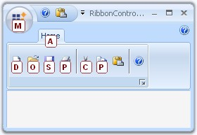

This section discusses the appearance settings of a Super Accelerator.
|
Property |
Description |
|
BackColor |
Gets / sets the backcolor for the accelerator key. |
|
Font |
Sets the Font Style for the accelerator key. |
|
ForeColor |
Sets the ForeColor for the accelerator key. |
|
[C#]
this.superAccelerator.BackColor = System.Drawing.SystemColors.AliceBlue; this.superAccelerator.Font = new System.Drawing.Font("Arial", 8F, System.Drawing.FontStyle.Regular) this.superAccelerator.ForeColor = System.Drawing.Color.Maroon; |
|
[VB.NET]
Me.superAccelerator.BackColor = System.Drawing.SystemColors.AliceBlue Me.superAccelerator.Font = New System.Drawing.Font("Arial", 8F, System.Drawing.FontStyle.Bold) Me.superAccelerator.ForeColor = System.Drawing.Color.Maroon |

Figure 1457: BackColor = "AliceBlue"; Font = Arial, 8F; ForeColor = "Maroon"